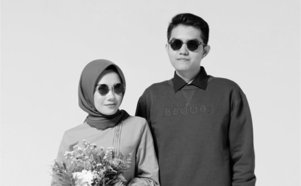
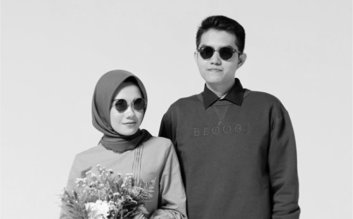
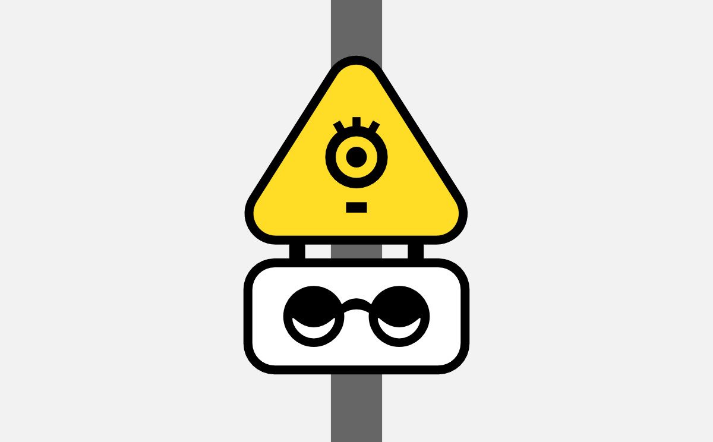
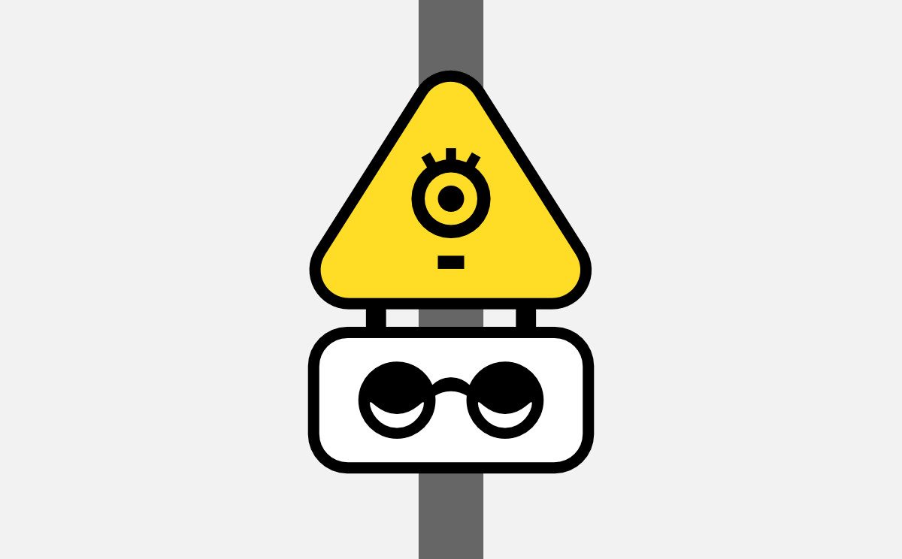

Branding for visual impairment
Visual impairment is a decreased ability to see. The identity aims to increase awareness to the matter. Create new set of “signifiers” for the visual impairment friendly places, technologies, etc.
The visual code utilizes Braille dots that are stylized to also look like smiley faces without eyes. That bold, even shocking to some extent, symbol works well to grab attention to the issue.
 


 
